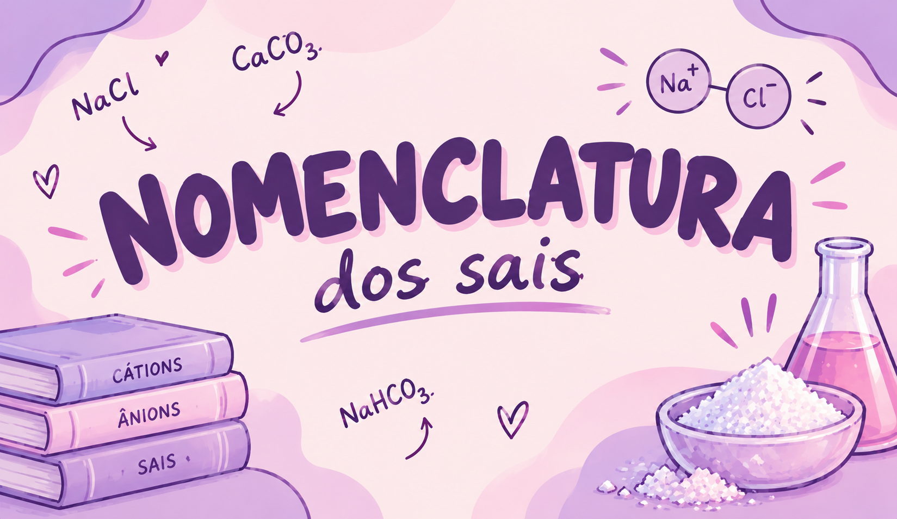

Nomenclatura

O que é a nomenclatura?
A nomenclatura dos sais é o conjunto de regras utilizado para nomear esses compostos químicos. Para descobrir o nome de um sal, precisamos identificar o ânion e o cátion que formam sua fórmula. Com algumas regras e exemplos, fica mais fácil entender como esses compostos são nomeados.
A nomenclatura química é um conjunto de regras utilizadas para dar nomes às substâncias químicas. No caso dos sais, essas regras permitem identificar os compostos a partir dos íons que os formam: o cátion, que possui carga positiva, e o ânion, que possui carga negativa.
De modo geral, o nome de um sal é formado pelo nome do ânion, seguido da expressão “de” e do nome do cátion. Essa regra padroniza os nomes das substâncias, permitindo que sejam identificadas em diferentes lugares, independentemente de quem esteja estudando ou utilizando o composto.
Por exemplo, o NaCl é chamado de cloreto de sódio. Esse nome é formado pela palavra “cloreto”, que corresponde ao ânion cloreto (Cl⁻), e pela expressão “de sódio”, que corresponde ao cátion sódio (Na⁺). O cloreto de sódio é o principal componente do sal de cozinha, mostrando como a nomenclatura química está presente no nosso cotidiano.
Outro exemplo é o CaCO₃, chamado de carbonato de cálcio, formado pelo cátion cálcio (Ca²⁺) e pelo ânion carbonato (CO₃²⁻). Esse composto está presente em materiais como o calcário e o mármore.
Portanto, conhecer as regras de nomenclatura dos sais é importante para reconhecer os compostos químicos, compreender sua composição e relacionar a Química a situações do dia a dia.
Para nomear um sal, precisamos observar sua fórmula química e identificar os íons que aparecem nela. Depois, usamos as regras da nomenclatura para formar o nome correto. Veja alguns exemplos:
- NaCl: cloreto de sódio: formado pelo cátion sódio (Na⁺) e pelo ânion cloreto (Cl⁻). É encontrado no sal de cozinha.
- CaCO₃: carbonato de cálcio: formado pelo cátion cálcio (Ca²⁺) e pelo ânion carbonato (CO₃²⁻). Está presente em materiais como o calcário e o mármore.
- KNO₃: nitrato de potássio: formado pelo cátion potássio (K⁺) e pelo ânion nitrato (NO₃⁻). É utilizado, entre outras aplicações, na fabricação de fertilizantes.
- Na₂SO₄: sulfato de sódio: formado pelo cátion sódio (Na⁺) e pelo ânion sulfato (SO₄²⁻). É utilizado em processos industriais.
Atencão para o ENEM: observe que o nome do ânion aparece primeiro e o nome do cátion vem depois de “de”. Identificar corretamente os íons é o primeiro passo para nomear os sais sem confundir suas fórmulas.
Linha do Tempo
Identificando o cátion
O cátion é o íon positivo. Seu nome geralmente corresponde ao nome do elemento químico.Exemplo: Na⁺ = sódio.
Identificando o ânion
O ânion é o íon negativo. Seu nome depende do tipo de íon e de sua composição.Exemplos: Cl⁻ = cloreto; CO₃²⁻ = carbonato; SO₄²⁻ = sulfato.
Terminações dos ânions
Alguns ânions recebem nomes que terminam em “-eto”, “-ato” ou “-ito”.
Exemplos: cloreto (Cl⁻), sulfato (SO₄²⁻) e sulfito (SO₃²⁻).
Regra para dar o nome
Na nomenclatura usual dos sais, utilizamos o nome do ânion seguido de “de” e do nome do cátion.Exemplo: cloreto + de + sódio = cloreto de sódio.
Pratique com fórmulas
Na nomenclatura usual dos sais, utilizamos o nome do ânion seguido de “de” e do nome do cátion.Exemplo: cloreto + de + sódio = cloreto de sódio.
Pratique com fórmulas
Veja como aplicar as regras a diferentes sais.
- NaCl = cloreto de sódio.
- CaCO₃ = carbonato de cálcio.
- KNO₃ = nitrato de potássio.